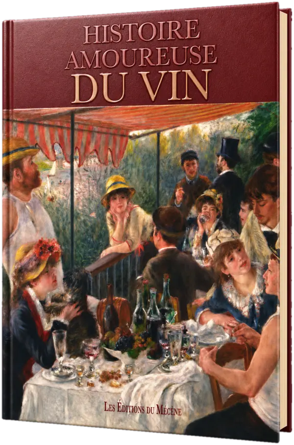
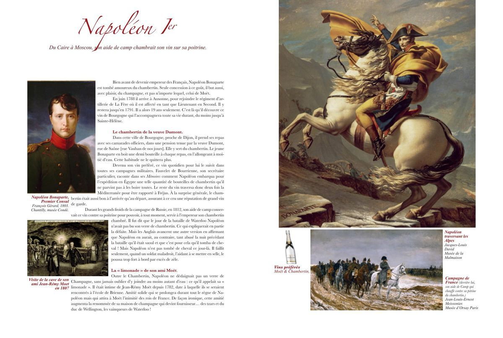
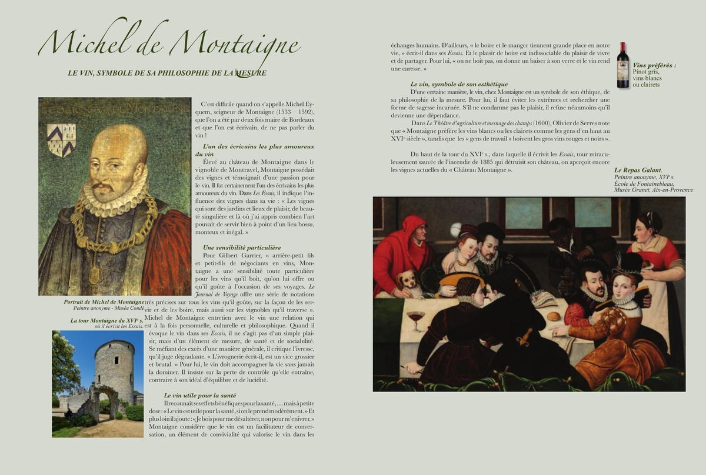
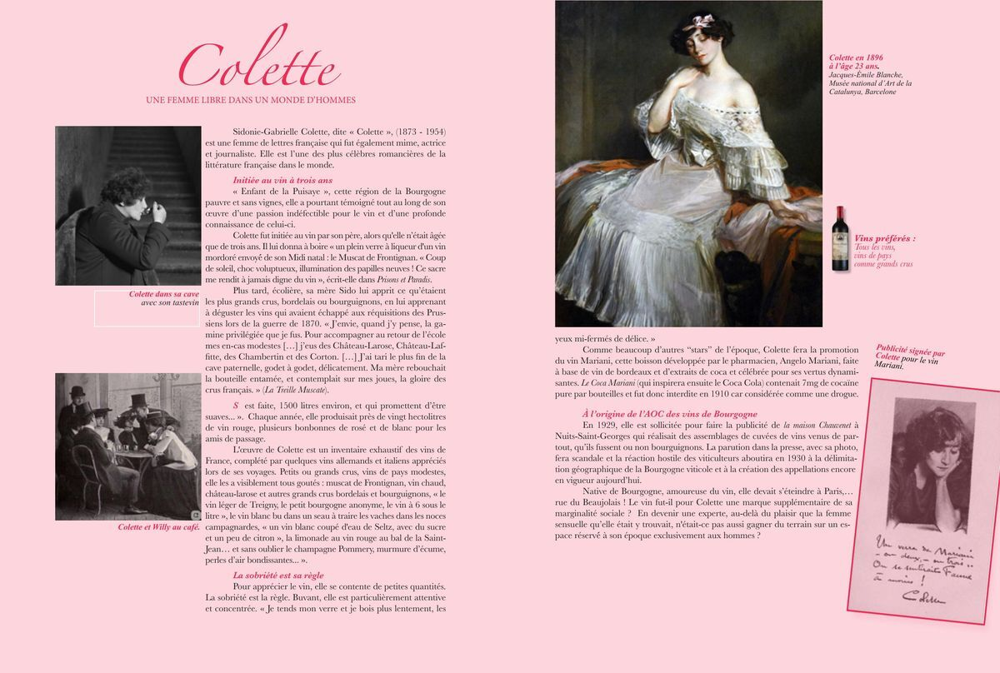
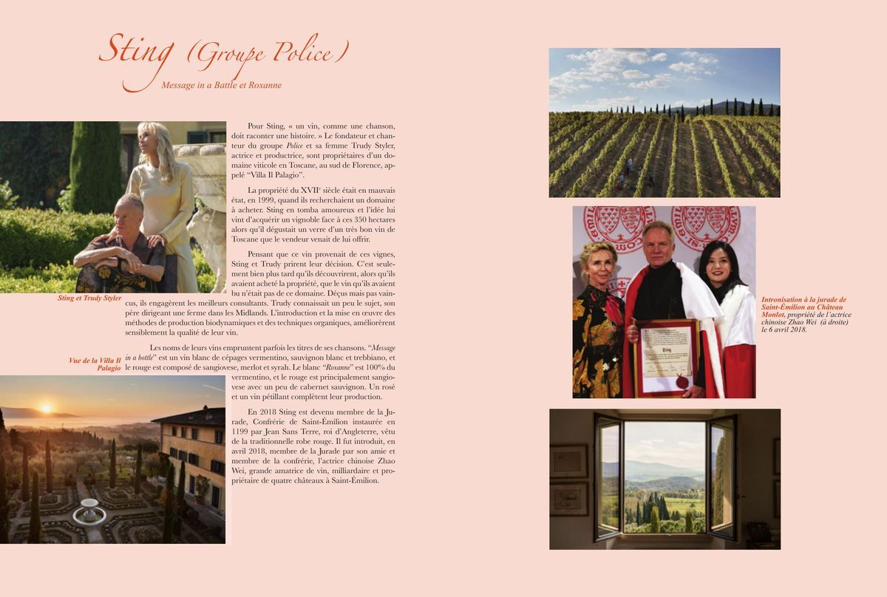
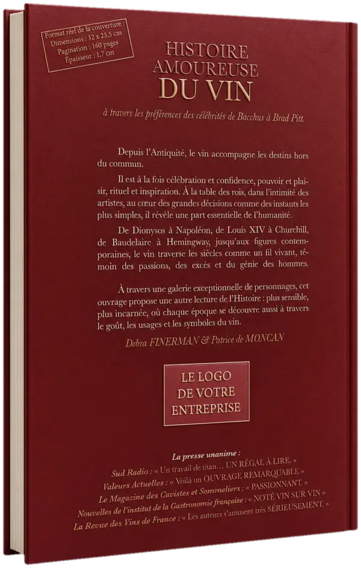

Histoire Amoureuse du Vin.
À travers les vins préférés des célébrités — de Bacchus à Brad Pitt. Un cadeau de prestige à l’image de votre entreprise.

Un livre qui traverse les siècles et les passions.
Depuis l’Antiquité, le vin accompagne les destins hors du commun. Il est à la fois célébration et confidence, pouvoir et plaisir, rituel et inspiration. À la table des rois, dans l’intimité des artistes, au cœur des grandes décisions comme des instants les plus simples, il révèle une part essentielle de l’humanité.
De Dionysos à Napoléon, de Louis XIV à Churchill, de Baudelaire à Hemingway, jusqu’aux figures contemporaines, le vin traverse les siècles comme un fil vivant, témoin des passions, des excès et du génie des hommes.
À travers une galerie exceptionnelle de personnages, cet ouvrage propose une autre lecture de l’Histoire : plus sensible, plus incarnée, où chaque époque se découvre aussi à travers le goût, les usages et les symboles du vin.
Ce nouvel ouvrage grand format constitue un cadeau de prestige d’exception pour vos clients, partenaires et événements institutionnels.
Ils en parlent.
Ce que la presse a retenu de l’ouvrage.
« Un travail de titan… un régal à lire. »
Sud Radio
« Voilà un ouvrage remarquable. »
Valeurs Actuelles
« Les auteurs s’amusent très sérieusement. »
La Revue des Vins de France
« Passionnant. »
Le Magazine des Cavistes
« Noté vin sur vin. »
Institut de la Gastronomie
70 personnalités à travers les siècles.
Extraits de l’ouvrage : chaque personnalité est racontée sur une double page, avec ses vins de prédilection.

Napoléon Ier
Du Caire à Moscou, son aide de camp chambrait son vin sur sa poitrine.
Bien avant de devenir empereur, Napoléon découvre le Chambertin à Auxonne en 1788. Ce vin de Bourgogne l’accompagnera toute sa vie, de l’Égypte à la Russie. Le jour de Waterloo, il n’aurait pas bu son verre de Chambertin — ce qui expliquerait en partie la défaite.
Vins préférés Chambertin · Moët & Chandon

Michel de Montaigne
Le vin, symbole de sa philosophie de la mesure.
Élevé dans le vignoble de Montravel, Montaigne possédait des vignes et témoignait d’une passion pour le vin. Dans les Essais, il le décrit comme un facilitateur de conversation et un élément de convivialité essentiel à la vie bien vécue.
Vins préférés Pinot gris · Clairet

Colette
Une femme libre dans un monde d’hommes.
Initiée au vin à l’âge de trois ans par son père, Colette traverse toute son œuvre avec une passion indéfectible. Elle fut à l’origine indirecte de la création des appellations bourguignonnes en 1930 — une épopée aussi littéraire que viticole.
Vins préférés Tous les crus

Sting & Trudy Styler
Un vin, comme une chanson, doit raconter une histoire.
Propriétaires du domaine Villa Il Palagio en Toscane, Sting et son épouse produisent des vins dont les noms s’inspirent de leurs chansons : Message in a Bottle, Roxanne… Membres de la Jurade de Saint-Émilion depuis 2018.
Vins produits Sangiovese · Vermentino
Et 66 autres personnalités : Churchill, Louis XIV, Baudelaire, Brad Pitt, Bacchus, Cléopâtre, Marilyn Monroe, Ernest Hemingway, Catherine Deneuve…
Un cadeau de prestige à votre image.
À partir de 100 exemplaires, transformez cet ouvrage en ambassadeur de votre marque : un livre cadeau prestigieux, à votre image.
Votre cadeau de fin d’année : l’offre et le devis
Votre logo en couverture
Le logo de votre entreprise est intégré directement sur la couverture, renforçant l’identité de marque à chaque consultation.
Une préface de votre président
Un texte de votre président ou directeur général ouvre l’ouvrage, créant un lien fort et mémorable avec vos destinataires.
Des exemplaires numérotés
Chaque exemplaire peut être numéroté et nominatif — un objet collector idéal pour vos clients VIP et événements institutionnels.

Faisons de votre marque un mécène du goût.
Parlons des possibilités de partenariat et de personnalisation de cet ouvrage d’exception. Des entreprises comme BNP Paribas, Cartier, Yves Saint Laurent, Total ou le Tribunal de commerce de Paris ont déjà confié leur livre à la maison.
Demander un devis 06 81 27 78 60Poursuivre la lecture.
D’autres titres du catalogue, à explorer dans le même esprit.